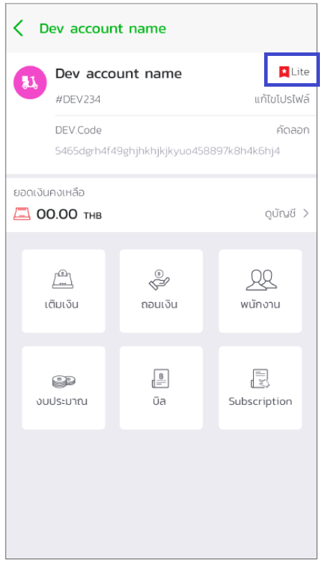

ขั้นตอนการอัพเกรด Tier¶
หากเมื่อใดก็ตามที่นักพัฒนาต้องการที่เรียกใช้ APIs ที่หลากหลายขึ้น หรือต้องการที่จะเผยแพร่ระบบออกสู่ตลาด นักพัฒนาจำเป็นต้องใช้ Standard tier หรือสูงขึ้นไปเท่านั้น โดยมีขั้นตอนการอัพเกรด Tier ดังนี้
1.ไปยัง Mana Application และเลือกเมนูบนซ้ายสำหรับนักพัฒนา

2.กด Lite ตามรูปด้านล่าง

3.เลือกเปลี่ยนระดับจาก Free เป็น Standard

4.เลือกชำระและจ่ายเงิน